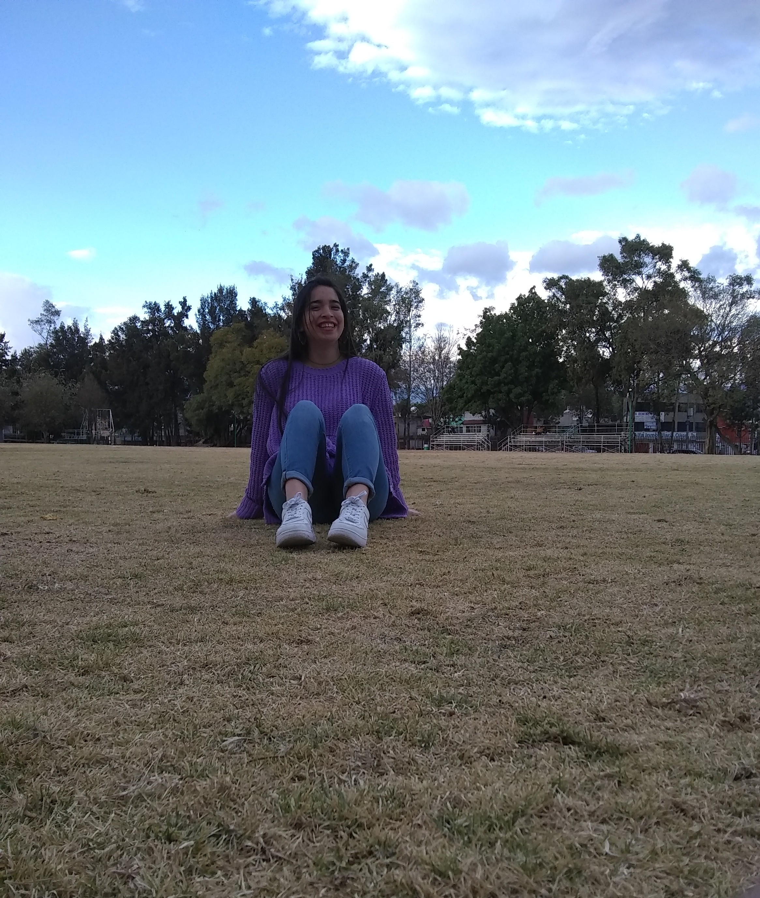

Me llamo Litany Yarek Pérez Castillo, tengo 20 años, nací el 18 de Junio del 2001. Soy la menor de 3 hijas; Mis papás son Martha Castillo y Carlos Federico. Mis hermanas son Tziranda Pérez y Yaiza Pérez
Actualmente vivo en la CDMX con mis papás y mis hermanas, también estoy en la Universidad estudiando una ingeniería en computación en el Instituto Politéncico Nacional en la Escuela Superior de Ingenieria Mécanica y Eléctrica (ESIME) unidad Culhuacán, estoy en quinto semestre de carrera.
En el 2017 y 2018 fui a comepetir a los interpolitécnicos culturales y ganamos el segundo lugar, represente a mi vocacional también represente al IPN ya que fuimos a un evento en la UNAM de danza contemporanéa.
